受傷後先做什麼？
1先脫離危險不要在持續受傷的環境中治療。
2先處理大量出血重度出血優先於其他症狀，止血繃帶可用於槍傷、割傷與嚴重出血。
3檢查真正傷勢槍傷可能有子彈留在體內，深層傷口也可能需要手術，而不是只包紮。
4保持傷口乾淨髒繃帶、髒縫合處與未消毒器材都可能增加感染風險。
5持續觀察疼痛、敗血症、過量與疾病可能在外傷處理後仍持續。
AshZone 的進階醫療不是「掉血就纏繃帶」。先診斷傷勢，再止血、清創、手術與控制感染，處理順序錯誤可能讓情況繼續惡化。
進階醫療會把傷勢拆得更細。醫療技能足夠時，可使用聽診器檢查其他玩家；也可使用殭屍病毒、敗血症與狂犬病快速血液檢測。
下面使用的是伺服器醫療系統 實際遊戲狀態圖示。玩家看到圖示後，可以直接對照傷勢名稱、建議用品與處理順序。
中彈後的主要外傷圖示。只止血不代表傷勢已處理完成。
一般開放性傷口。持續流血時優先處理出血，再確認傷口是否受到污染。
比一般傷口更嚴重，可能伴隨大量出血或需要進一步手術。

代表深層／內臟類傷害，屬於高風險外傷。

鈍擊、撞擊或其他外傷後可能出現。嚴重時會伴隨疼痛與行動狀態惡化。

頭部受到強烈撞擊後可能出現，會影響視覺與角色狀態。
疼痛本身是症狀，不是病因。槍傷、重創、手術與其他傷勢都可能造成疼痛。
短時間使用過多藥物後可能出現的危險狀態。
代表血液量已經非常危險，通常是大量或持續出血後的結果。
嚴重血液感染狀態。不潔注射器、污染傷口或醫療器材都可能增加風險。
特殊病毒感染狀態，不能用普通感冒的處理方式看待。
動物相關感染風險之一，建議在疑似感染後儘早確認。
高溫或火焰造成的傷勢狀態。
長時間低溫暴露造成的組織傷害。
代表手部或醫療衛生狀況不佳，可能提高污染與感染機率。
包紮後仍存在感染／敗血症風險的傷口狀態。
野外手術套件可用於戰場環境處理嚴重傷口；實際可執行的處置仍受角色技能與物品條件影響。
血液感染是危險狀態。未消毒的注射器等不潔醫療行為可能導致敗血症；可使用敗血症快速血液檢測協助確認。
感染殭屍病毒後可使用專用快速血液檢測協助確認。不要把它當作普通感冒處理。
疑似感染狂犬病時可使用專用快速血液檢測協助確認。出現疑似狀況時應儘早確認。
髒污的傷口、繃帶或醫療器材需要特別注意。治療後仍要觀察是否出現感染惡化。
分為輕微、劇烈到難以忍受。止住血不代表疼痛與深層傷勢已經解除。
藥物使用過量可能造成獨立的中毒狀態，從輕度、重度到危及生命。不要看到症狀就連續大量服藥或注射。
受到嚴重撞擊後，視覺與身體狀態可能受影響。先確保安全並進一步檢查傷勢。
不要只關注血量條。持續出血時先控制出血來源，再做後續處置。
以下依目前伺服器醫療檔案中的物品名稱與用途整理。治療前先確認傷勢，不要把藥品當成萬用補血道具。
至少準備乾淨繃帶／止血用品、消毒用品，以及能處理嚴重傷勢的醫療工具。團隊中若有醫療兵，建議由醫療兵攜帶聽診器、手術用品與檢測用品，負責進階診斷。